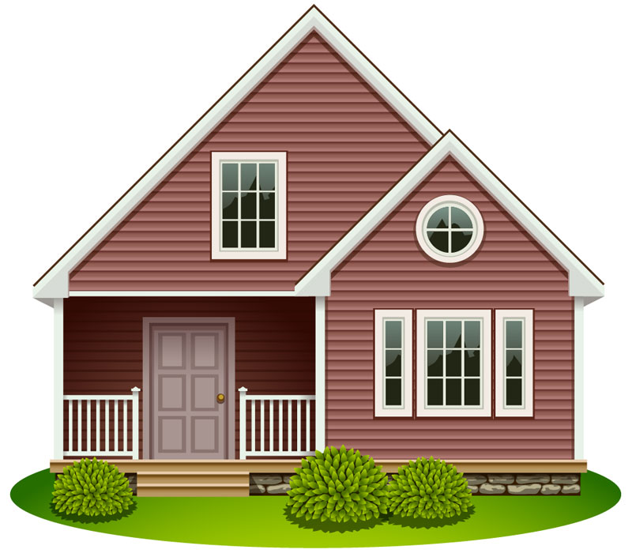
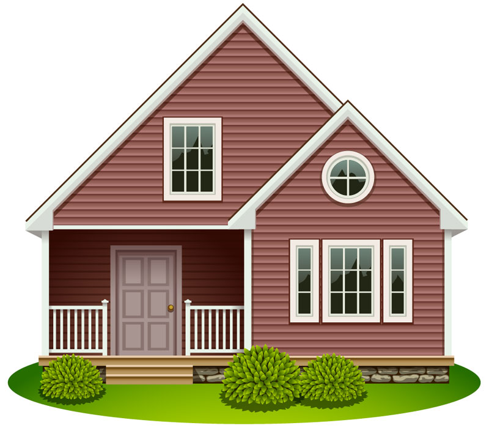

اللجلجه,اللثغه ,الخنف ,السرعه الزائده في الكلام
تأخرالكلام و اللغه , الحبسه

البحه , الوهن الصوتي , حبسه كلاميه , الخرص الهستيري
الذهاب الي التمارين العلاجية
يمكنك الاستعانه بصفحه الاختبارات للمساعده في تشخيص الحاله
ملحوظه : هذه التمارين مستمره يوميا تبدأ بالتدريج من خمس عدات لكل تدريب في اليوم الي 20 عده بالتدريج مع تطور الحاله
ملحوظه : هذه التمارين مستمره يوميا تبدأ بالتدريج من خمس عدات لكل تدريب في اليوم الي 20 عده بالتدريج مع تطور الحاله
من خمس لعشر مرات مع الزيادة


تقسيم الشفاه العليا والسفلي لأربع نقاط مع تدليك كل نقطة بشكل دائري

الإيدين: استخدم السبابة والإبهام من كل يد.
الشفة العليا: اضغط عليها برفق وادفعها في اتجاه معين (مثلاً للأعلى أو للخارج).
الشفة السفلى: اضغط عليها بنفس الطريقة، لكن في اتجاه معاكس (مثلاً للأسفل أو للخارج بعيد عن
الشفة العليا).
لحركة: تكون بطيئة وثابتة، استمر حوالي 10-15 ثانية.


-اجعل الطفل في وضع مريح أمامك.
-اطلب منه فتح فمه قليلاً للسماح بحرية حركة اللسان.
-الطفل يضغط باللسان على جانب معين داخل الخد (يمين أو شمال) بقوة خفيفة، مع محاولة إبقاء اللسان في هذا الوضع لمدة 3-5 ثوانٍ.
-المتابع (ولي الأمر أو الأخصائي) يضع إصبعه على نفس جانب الخد من الخارج، مقابل اللسان
-يُطبق ضغطًا خفيفًا بإصبعه، مع محاولة مقاومة الطفل لهذا الضغط باستخدام لسانه.
كرر التمرين 5-10 مرات لكل جانب، مع أخذ استراحة قصيرة بين كل مجموعة.


ملحوظه: تمرين النفس يكون بأخذ النفس من الأنف وإخراجه مع كل تمرين من التمرينات التالية


ملحوظة: هذه التدريبات خاصة بالتلعثم والبحه الصوتيه
ملحوظه : لكل طفل له تدريبات خاصة به يضعها الأخصائي وفقا لحالة الطفل
تقليد حركات كبري
اعمل زيي : ارفع ايدك , تقليد حركة رف اليد للأعلي او الأسفل ,التسفيق,التخبيط ,القفز , ثني الجزع ,رفع القدم لأعلي و للأسفل
تقليد حركات صغري
تقليد فتح العيد وقفلها , فتح الفم وغلقه , حركه اللسان , الاشاره بالاصابع
تنفيذ أمر واحد
مثل : ارفع ايدك , سقف , خبط , طلع لسانك , افتح فمك , افتح الباب
تنفيذ أموامر مركبه
مثل : حط ايدك علي شعرك , غمض عينك وافتح فمك , افتح فمك وسقف
ملحوظة: يتم التعرف علي 6 اشياء شائعه من كل مجموعه يتم التعرف علي الاشياء والتدريب علي نطقها
1.التعرف علي الحيوانات
2.التعرف علي الطيور
3.التعرف علي الفواكه
4.التعرف علي الخضراوات
5.التعرف علي الملابس
6.التعرف علي ادوات الطعام
7.التعرف علي اثاث المنزل
8.التعرف علي الألوان
1.كلمه بمعني جمله
مثل:اشرب اكل اجري انام العب
2.جمله من كلمتين
مثل:عاوز اكل ,عاوز اشرب , بابا جه
3.التدريب علي جمله من 3 كلمات
مثل:التدريب علي سرد قصه مثل ترتيب الالاحداث تسلسل الاحدث او التدريب علي وصف صوره
4.التدريب علي نحو الكلام
مثل:اضافه الضماير مثل انا وهو
ملحوظة: يتم التركيز على تمارين التنفس والتحكم في الصوت
-اجلس مع الطفل بشكل مريح.
-ضع يدك على بطن الطفل.
-اطلب منه أن يأخذ نفسًا عميقًا من الأنف بحيث يتحرك بطنه للأمام (يدك تتحرك مع البطن).
-زفر الهواء من الفم ببطء، مع محاولة تقليل حركة الصدر.
-اطلب من الطفل إصدار صوت "آه" ببطء من أدنى درجة صوت ممكنة إلى أعلى درجة.
-يمكن تكرار الصوت بشكل متدرج من المنخفض إلى العالي
-تمرين التدرج الصوتي يساعد في تمدد الأحبال الصوتية.
-اطلب من الطفل نطق الحرف الساكن بوضوح، ثم تكرار الحرف مع كلمة بسيطة تبدأ به (مثلاً: ب - بيت).
-يمكن استخدام مرآة لمراقبة حركة الشفاه واللسان.
خلي الطفل ياخد نفس عميق من الأنف ويزفر من الفم ببطء
اطلب من الطفل يعمل صوت همهمة منخفضة (مثل صوت النحل).
طلب من الطفل ينطق أصوات مختلفة مثل "م"، "ن"، "ر"، "س"، "ش" بوضوح.
اسمعوا أصوات حيوانات (مثل مواء القطة، نباح الكلب)، وحاولوا تقليدها معًا.
اقرأوا جمل قصيرة مع الطفل بصوت واضح ومسموع.
شجع الطفل على الغناء بأغاني بسيطة ومحفزة.
الطفل ينفخ في بالون مع محاولة إصدار صوت مستمر.
يتم الاستعانه بتدريبات النطق والكلام
-شجع الطفل على النظر في عيني الأخصائي أو ولي الأمر لمدة 5 ثواني.
-استخدم لعب أو أشياء مفضلة لجذب انتباه الطفل للنظر.
-قل للطفل "انظر لي" أو "انظر إلي" بشكل لطيف ومرن.
-امدحه واثنِ عليه عند تحقيقه ذلك.
اطلب من الطفل مراقبة وجوه الأشخاص أثناء التحدث.
ساعده على فهم تعبيرات الوجه والإيماءات.
-شجع الطفل على استخدام الإيماءات مثل الإشارة، التلويح، أو الهز بالرأس.
-استخدم الإيماءات بنفسك أثناء التحدث لتعليم الطفل.
-استخدم جمل بسيطة وواضحة.
-شجع الطفل على تكرار الكلمات البسيطة.
-شجع الطفل على اللعب مع الآخرين أو مع ولي الأمر بلعب بسيطة.
-ألعاب مثل تبادل الكرة، أو البناء مع مكعبات تساعد على التفاعل.
استخدام أنشطة تساعد الطفل على تنظيم حواسه مثل اللعب بالرمل، العجين، أو الألعاب التي تحتوي على أصوات.
تمارين التوحد بشكل عام تحتاج إلى إشراف وتقييم مستمر من قبل أخصائيين متخصصين في علاج اضطرابات طيف التوحد، لأن التوحد له أنواع ومستويات مختلفة لكل حالة خصوصياتها. المحتوى السابق هو جزء مساعد فقط يهدف لدعم الأهالي في التعامل اليومي مع أطفالهم، ولا يغني عن التشخيص والعلاج المهني المتخصص.
استمع إلى الصوت واضغط على الحرف الصحيح.

ما هو الحرف الأول في اسم هذه الصورة؟
الحروف: م - ل - ق
ملاحظة: هذا التمرين يحتاج تفاعل بالسحب ولا يمكن التحقق تلقائياً هنا.


ذهبت إلى المدرسة بـ _____
الحرف: ب
الكلمة: سيارة
 



كلمات: المدرسة، يذهب، كل يوم، محمد


الحيوانات تعيش في الغابة.
"نحن هنا من أجل ان ننهض سويا"

©All Rights Reserved